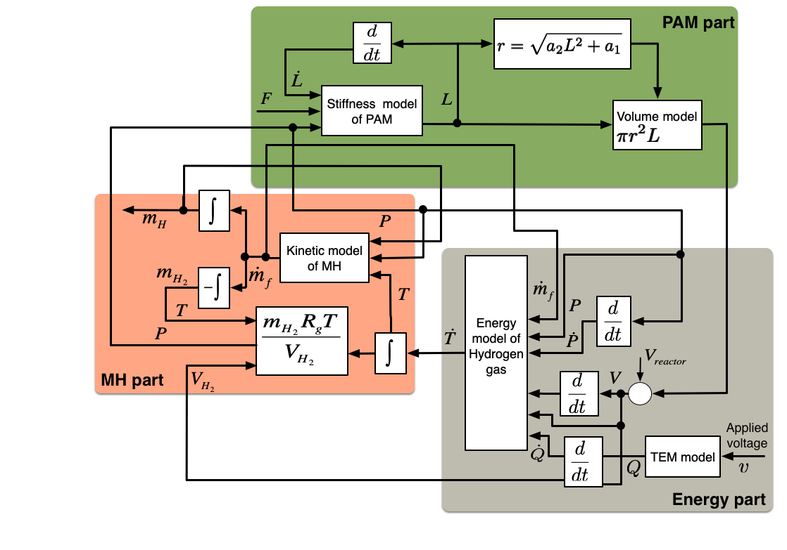
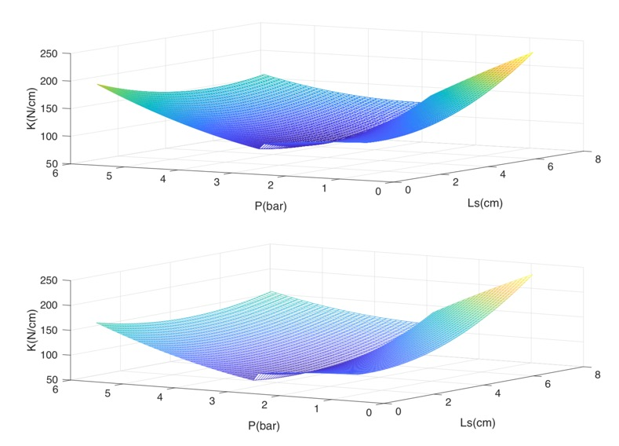

Bio-inspired Large-Scale Systems
“From muscle to machine — learning adaptability from nature.”
Challenge complex, nonlinear, and thermodynamic dynamics, Change control paradigms toward bio-inspired intelligence, and drive Impact in scalable, compliant robotic systems.
Bio-inspired Motivation
One of my long-term research goals is to design soft robotic systems inspired by biological mechanisms, emphasizing integration across sensing, actuation, and control. Bio-inspired systems offer a unique balance of compliance, adaptability, and energy efficiency — qualities that conventional rigid robots often lack.
During my Ph.D. research, I investigated pneumatic artificial muscles (PAMs) — a class of soft actuators that mimic biological muscle behavior. PAMs exhibit strong nonlinearity and compliance, making them ideal for bio-inspired robots, but also challenging to control.
System Characteristics and Control Challenges
|
 |
The PAM system combines thermodynamic and mechanical dynamics, making feedback control particularly difficult. The nonlinear coupling among pressure, temperature, and deformation leads to high-dimensional and time-varying system behavior. These challenges motivate the exploration of model-free and information-based control approaches, such as fuzzy control and adaptive feedback schemes. Such approaches are essential to handle systems that lack accurate analytical models, particularly in thermodynamic environments. |
Thermodynamic Feedback Control
|  |
In contrast to conventional mechanical control, thermodynamic feedback introduces energy transfer and state uncertainty into the control loop. My work has focused on extending classical control frameworks with fuzzy logic and adaptive inference to achieve real-time feedback under uncertain conditions. These insights form the foundation for future multi-physics control systems — integrating thermodynamic, mechanical, and informational feedback for robust operation in large-scale systems. |
Advancing from soft muscle-inspired actuators to large-scale intelligent systems — bridging thermodynamics, nonlinear control, and bio-inspired design.